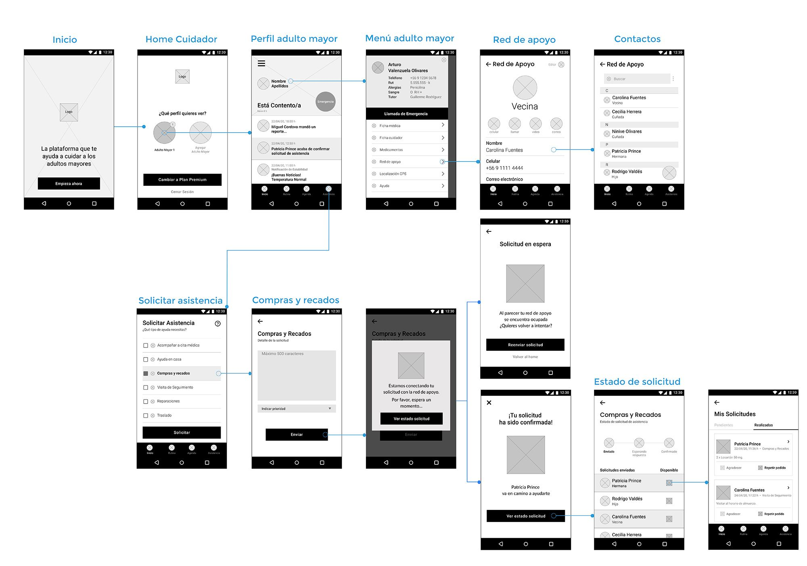

Cómo medir el éxito del proyecto:
Los KPI han sido orientados a la medición del comportamiento del usuario en los primeros 3 meses desde el lanzamiento del producto mínimo viable en su versión web y app (Progressive web app), para comprobar que las funcionalidades estén activadas correctamente y evaluar los resultados, de esta forma se podrá potenciar el producto y pensar en nuevos desarrollos.
| # | Objetivos | Puntos de contacto | KPI |
|---|---|---|---|
| 1 | Solicitar asistencia para el adulto mayor en la aplicación y en la web. | - Botón de asistencia en la aplicación.
- Sección “Solicitar Asistencia” en la web. - Formulario para mensaje con detalles en la aplicación y la web. - Botón “Enviar” en la aplicación y en la web. |
La tasa de conversión en ambos canales: Número de solicitudes de asistencia realizadas a través de la aplicación y de la web. |
| 2 | Llamar a un contacto de la red de apoyo a través de la aplicación. | - Botón de Red de Apoyo en la aplicación.
- Registro de la llamada en la aplicación. |
La tasa de conversión en la aplicación: Número de llamadas realizadas a la Red de Apoyo |
| 3 | Consultar reportes de salud y psicológico en la aplicación y en la web | - Botón de ingreso a ficha médica. - Botón de Reporte de salud. - Botón de Reporte psicológico. |
La tasa de conversión en ambos canales: Número de consultas de reportes de salud y psicológico. |
Conociendo al usuario: entrevistas y arquetipo
Se realizaron entrevistas a cuidadores, a profesionales relacionados con el área de la salud y Geriatría, y a familiares que cuidan adultos mayores con el interés de conocer su experiencia en el cuidado de las personas de tercera edad. También se entrevistó a adultos mayores para profundizar en la relación que se establece entre ellos y sus cuidadores. De estas entrevistas se rescatan las funcionalidades que debiese tener la plataforma, como por ejemplo: el registro de las actividades y los medicamentos y la necesidad de saber el estado anímico del adulto mayor.
“Hay una hoja de registro donde se van anotando todo lo que se le hace al paciente y su desarrollo durante el día".
Sara Yáñez, 63 años. Técnico paramédico. Tiene a cargo la alimentación de un adulto mayor
"Cuando un adulto mayor necesita atención diaria es por que está muy solo y corre algún tipo de riesgo de caída o de accidente".
Ha trabajado en residencias de adultos mayores. Fabiola Briones, 31 años Kinesiólogo, magíster en Gerontología
"Lo primero es la salud. Si se siente mal emocionalmente , llamarla, preguntarle si tomó desayuno, a qué hora almorzó, a qué hora se bañó, cosa muy normal en familia”.
Romina Catalán, 32 años. Cuida a su mamá
Luego de recopilar esta información de tipo cualitativa, se procede a construir los arquetipos, que representarán los segmentos de usuarios de la plataforma.
Light user: es una persona que asiste al adulto mayor en tareas específicas y ocasionales, puede ser un familiar, vecino u otra persona de su red de apoyo.
Medium user: está más al pendiente y utilizaría más seguido la plataforma, puede ser un profesional de la salud o un familiar que requiera más datos del adulto mayor.
Heavy user: es el cuidador del adulto mayor, es quien pasa la mayor parte de su tiempo con él.
Se enfocó la investigación en el High user, que para efectos de la plataforma deberá responder al máximo de las funcionalidades.

Conociendo la competencia: Benchmark
Se analizo la competencia indirecta, ya que no existe actualmente en esta región un servicio tan completo como el que ofrece Eymi. Se identificaron 5 aplicaciones de cuidado del adulto mayor y los parámetros que se analizaron fueron agrupados en 3 grandes dimensiones: contenido, estructura plataforma y funcionalidades.
Buenas prácticas:
- Botones de emergencia jerarquizados y de fácil acceso.
- Localización gps para ubicar al adulto mayor
- Alarmas y recordatorios para alertar a sus cuidadores de la rutina.
Evitando las malas prácticas:
- Carecen de voz de marca o personalidad bien definida.
- Interfaz standard y fría.
Mapa de navegación
Con los datos recopilados en un CardSorting cerrado, se pudo organizar la información por categorías y proceder a realizar el mapa de navegación de la plataforma. En un primer nivel está la página de inicio y bienvenida, para luego dar paso a la cuenta del cuidador y luego al perfil del adulto mayor.
Flujo de interacción
El flujo de solicitud de asistencia emerge como distintivo en la plataforma.La asistencia la pide el cuidador, por alguna solicitud que tenga el adulto mayor, tales como compañía para una cita medica, traslado, ayudas del hogar, entre otros. En este caso se toma de ejemplo el de compras y recados.
Wireframe

Moodbard
Selección de los conceptos claves que indican como debe comunicar Eymi y la personalidad que debe adquirir, da sugerentes formales y una paleta cromática. A partir de estos conceptos surge la figura de Eymi como asistente, una personificación de lo que la plataforma desea transmitir. Con el moodbard iniciamos el desarrollo de la interfaz
Compañía
Amigable
Cercano
Asistente
Comunidad
UI KIT
La identidad gráfica toma tonos asociados a la salud y tonos pasteles, con otros complementarios mas cálidos para dar el concepto de empatía y cercanía. Estos conceptos se ven reforzados con la asistente Eymi, la cual acompaña en cada proceso al usuario, comunicando con una voz amable y dando rostro a la plataforma.
Test de usabilidad
Mockup
La plataforma en su versión mobile es una aplicación, de forma de sacar el mayor provecho del equipo conectándolo al servicio de llamadas y los contactos registrados en el dispositivo
En la versión Desktop se enfocó el desarrollo en dar a conocer el producto, la marca y sus planes, cuenta además con un chat de asistencia en el cual Eymi, la asistente virtual, responde dudas sobre los servicios ofrecidos.Si quieres ver el prototipo navegable en Figma